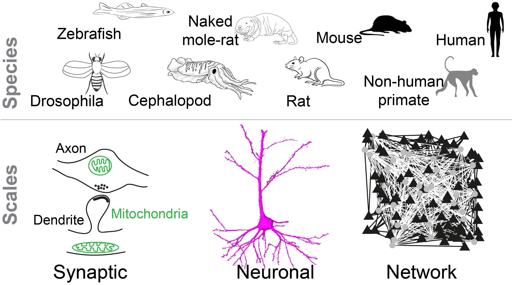

Sahil Loomba
Machine Learning · Connectomics · Neuroscience · Evolution
A neuron’s partners may sit a few micrometres away, in the opposite hemisphere, or in an organ outside the brain altogether. Whether the same organizational principles govern connectivity across these scales — across species, and across states — is open, and now measurable: volumetric electron microscopy resolves entire networks while preserving the ultrastructure of synapses and organelles. The limiting step is no longer acquisition but interpretation. I develop machine-learning methods for reading dense reconstructions and apply them comparatively: across cortical areas in mouse and naked mole-rat, across species as distant as Drosophila, zebrafish and the cuttlefish Sepia officinalis, and outward to circuits that leave the brain. Earlier work reconstructed human and non-human primate cortex.

Questions
What is conserved, and what is contingent? Across species: how much of a circuit’s connectivity is specified by cell type, and how much is left to experience? What does the expansion of inhibitory circuitry in larger brains buy computationally? Do circuits that solve the same problem in distant species converge on the same wiring, or arrive at it differently?
What breaks under perturbation? Across states: how do synapses — and the mitochondria that support them — change to enable learning? How is connectivity remodelled during sleep? Where do disease models diverge from wild type — locally, at specific connections, or globally?
Approach
To get at such questions:
- I develop machine-learning methods for analysing and interpreting dense reconstructions — guided by the biological context of the underlying question — to enable data-driven discovery, building on established segmentation pipelines rather than reinventing them. A recurring methodological aim is to recover as much circuit structure as possible from EM volumes without manual labels.
- I apply these methods to existing 3D-EM volumes, so that what can be asked of the data, rather than what can be acquired, sets the limit.
- I design experiments and collaborate with experimental labs — across species, individual animals, development, perturbed states such as sleep loss and disease models, and multi-modal experiments that add molecular identity by pairing electron microscopy with expansion microscopy — to map out connectivity motifs that remain conserved against those that are altered.
What survives evolutionary distance, and what breaks under perturbation, together constrain what the underlying organizational principles can be.
Beyond the brain
The same logic should apply to circuits that leave it — the conserved-versus-contingent question at its extreme. Autonomic and sensory axons innervate the liver, pancreas and gut, where they terminate on non-neuronal targets rather than on other neurons — and whether that wiring is structured the way cortical wiring is, target-specific and motif-rich, is largely unmeasured. I have begun to extend dense reconstruction and the analysis tools built for cortex to these peripheral tissues. It is also a test of how far models trained on brain tissue transfer to tissue that looks nothing like it.
Positions
Theory Fellow · Janelia Research Campus, HHMI present
PhD · Max Planck Institute for Brain Research, Frankfurt